git --version8 Introduction to Git and GitHub
8.1 Description
This session will cover the basics of using Git and GitHub to create version-controlled analyses and projects. Before this session you should have set up at GitHub account and installed GitHub Desktop. For instructions, visit the “Installations” session document. It is also recommended that you install the GitHub CLI to facilitate streamlined interfacing between github and the Terminal.
8.1.1 What is Git?
Git is the most widely used version control system to date. It is free and open source. Git-based version controlling allows users to track changes that have been made to documents, code, etc. It also gives users the ability to restore version-controlled documents to earlier versions and collaborate with other developers.
Some common vocabulary:
1. Directory = Folder
2. Repository = Parent folder which is the top folder for your project
3. Commit = a "saved" snapshot of the repository or files within it
4. Push = upload the current version of your repository to GitHub
5. Pull = download content from a remote GitHub repository and update the local repository to the pulled version
6. Clone = copy a remote GitHub repository to a local location
7. Staging area = contains information about what you will include in your next commit
8. Terminal = a.k.a. command line, interface for text commands
9. CLI = command line interface, allows certain programs to interface with the command line (for example, quarto has a CLI that allows you to run quarto commands from the terminal in RStudio)What is the difference between Git, GitHub, and GitHub Desktop?
Git is the tool that actually tracks changes made to your code over time and allows for version control. GitHub is an online website that stores your Git repositories. GitHub Desktop is a downloaded software that allows you to work with your Git repositories locally.
8.1.2 Basic git commands:
1. git clone = copy a GitHub repository to your local machine
2. git add = add files to the git staging area
3. git commit = save files (typically with a message describing what was changed)
4. git push = upload files in the commit to a remote repository (GitHub)
5. git pull = download remote repository to local directory and update local repository with remote version 8.1.3 Interface with git from your local machine using the Terminal
Most of the time, we use git on our local machine to develop the contents of the repo and then push them to GitHub. For this session, we will be interfacing with git from the Terminal to build an understanding of how git operates on a fundamental level. In our next session, we will cover how to develop git-controlled projects using the code editor VS Code.
1. Confirm git is installed. Open Terminal and type the following:Note - If you can’t find your Terminal, (for Mac) you can press Cmd + space to open Spotlight search. Type “Terminal”. We recommend adding Terminal to your dock.
You should see a readout that looks like this: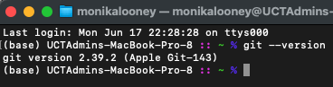
2. Configure git
This will allow you to set your user information so it will stay consistent across all git commits and repositories. You will only need to do this once. # To set the name attached to your commits
git config --global user.name "Your Name"
# To set the email attached to your commits
git config --global user.email "youremail@email.com"3. Navigate to your local working directory where you would like to store your git repository.cd /PATH/TO/WORKING/DIRECTORY4. Make a directory for your project and initialize git. mkdir [PROJECT NAME]
cd [PROJECT NAME]
git init5. Create your files locally.
- You can populate the repo with any files that you like. Be it a Quarto project, a simple R script, or a data folder.
- You should always have .gitignore and README.md files in your repository. .gitignore should be added before anything else because if you begin adding and committing files before you specify which should be ignored, they will already be tracked.
Note - You do not need to do this manually if creating a Quarto Project as these files are already included
Note - the .gitignore file will be automatically hidden in your file finder. If you want to find and edit your .gitignore, on a Mac, you can use the keyboard shortcut Cmd + shift + . to view it or open the repo in a code editor (this will be covered later).
# To create a .gitignore from the Terminal
touch .gitignore# To create a README.md from the Terminal
touch README.mdIt is generally good practice to now set up a basic repo structure. First edit the .gitignore to ignore any large folders or files that you do not want to track (for large analyses, consider ignoring data and output folders)
Make a directory for data. This should generally contain raw unprocessed data.
mkdir dataMake a directory for output. This should generally contain any of the processed outputs (processed data, figs, etc) generated by your code.
mkdir output6. Check the status of your repo. git status7. Add your new or edited files to the staging area.
- The git staging area is an intermediate platform between working files and permanently stored version-controlled commits. This allows you to continue working with any files and confirm they are correct before committing. Any files added to the staging area will be committed in the next commit. # Make a test file (or copy real files in)
touch file.txt
touch file2.csv
touch file3.txt
# To add one file
git add file.txt
# To add multiple files
git add file.txt file2.csv
# To add files by pattern
git add *.txt
# To add all files in the directory recursively
git add .Note - Be careful when adding all files recursively, because it will also add large files if they are not specified in .gitignore
Check status again to confirm correct files have been added to the staging area.
git status8. View unstaged changes.
- It is good practice to view the changes that have been made before committing. Normally we do this in a visual code editor (i.e. VS Code), but for now we will go over how to do this from the Terminal. # To see staged changes
git diff --staged
# To exit, press "q"
#To see unstaged changes
git diff 9. Commit changes
- Once you are happy with the files in your staging area you can commit to save the changes and the current snapshot of the repository.
*Note - It is good practice to always include a short "message" with each commit that describes what was changed. This should be written in present tense. Your first commit is generally called "Initial commit."*# The -m option will include the message for your commit
git commit -m "Initial commit."10. If necessary, unstage files.
- If you view your changes and notice an error (i.e. you have staged a large file that you don't want to track), you can remove it from the staging area or "unstage" it before you commit. # To unstage a specific file
# NOTE - if local changes have been made to the file AFTER the last commit, git restore will restore the local version to that of the previous commit.
git restore --staged file.txt
# or
git rm --cached file.txt
# To unstage multiple files
git restore -- staged file.txt file2.csv
# To unstage files by pattern
git restore --staged *.txt
# To unstage everything in the staging area while maintaining changes the files. git reset is an older command that will remove the file from the staging area but will keep the changes made to the file in your local directory.
git reset .11. Commit changes
- Once you are happy with the files in your staging area you can commit to save the changes and the current snapshot of the repository.
*Note - It is good practice to always include a short "message" with each commit that describes what was changed. This should be written in present tense. Your first commit is generally called "Initial commit."*# The -m option will include the message for your commit
git commit -m "Initiate version control for *.txt files."12. Push repo to GitHub.To update the online remote repository, you need to push the repo to GitHub. An easy way to do this is to use the GitHub CLI. If you have not done so already, download and install.
# To push using GitHub CLI, authenticate GitHub
gh auth login
# Follow the prompts in the Terminal
# Create a remote repository
gh repo create
# To push the repository we created here, you must select "Push an existing local repository to GitHub". You can also use gh repo create to create a new repository from scratch or from a template. To push the existing local repo, paste the file path at the prompt
?Path to local repository (.) /PATH/TO/LOCAL/REPONote - If you already have a remote repository created that is cloned to a local directory, after making changes locally, you can push the local repository to the remote repository using the following:
git push8.1.4 Branching and Merging from the Terminal
One main feature of git repositories is the ability to create and merge different branches. This comes in handy when you have multiple people working on the same project. You can work on different branches that are dedicated to different parts of the project, and then those branches can be merged back into the master branch.
1. Create and switch to a branch# To create a new branch called "dev"
git branch dev
# To begin working in the "dev" branch
git checkout dev
# Alternatively, do do this in one step
git checkout -b devNow you can make your changes and commit on that branch.
2. Merge the branch back into the master branch. git merge dev3. Now return to the main branchgit checkout master
# Or
git checkout main8.1.6 Create, branch, and clone a repository from GitHub
Think of a git repository as a project folder. All of the documents that you will need to run analyses for your project should be stored within the same repo.
1. Sign in to [GitHub](https://github.com/login).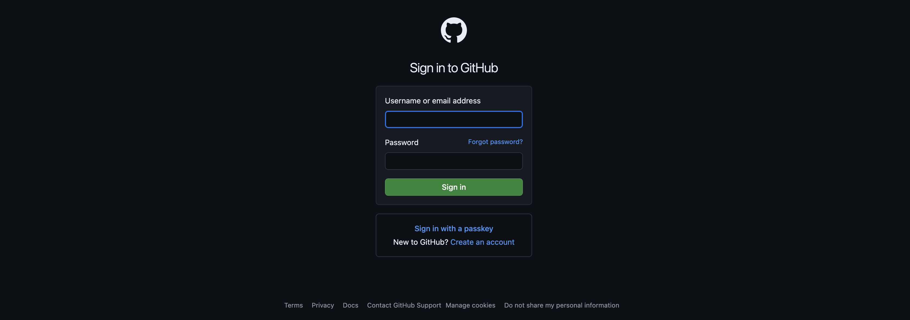
2. From your homepage, click the "New" button to create a new repository.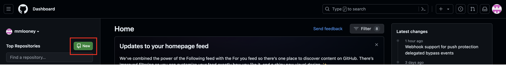
3. Give the repo a name and description and adjust settings if necessary.
- We typically set the repo to private until it is ready to share publicly.
- You can add README.md and .gitignore files here if you like, or you can add them later. If you are creating a project locally, it often makes more sense to create these files locally. For some projects, for example, a Quarto Project, these files are already included in the Quarto Project architecture, so you do not need to create them here. 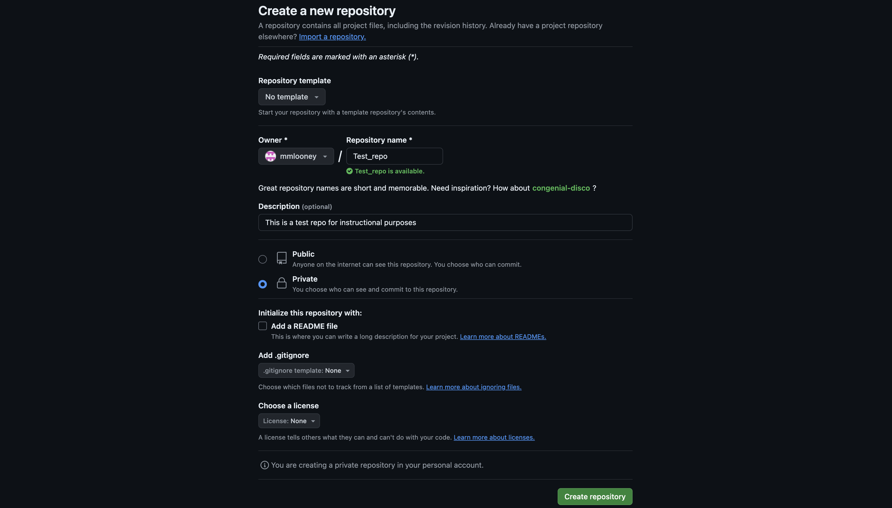
4. If necessary, add README.md on GitHub.
- All projects MUST have a README file. This is a Markdown file that should contain all relevant information to describe the repository and instructions for running any analyses. 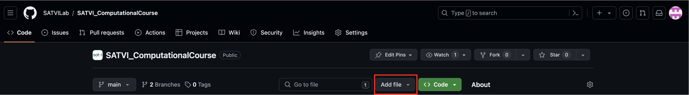
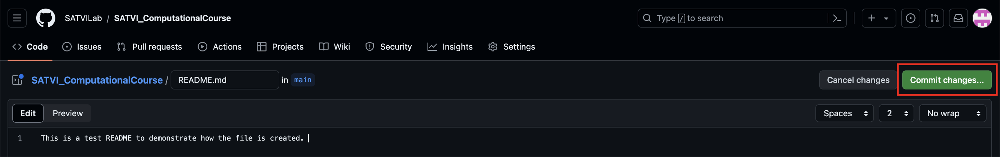
5. Create a new branch. 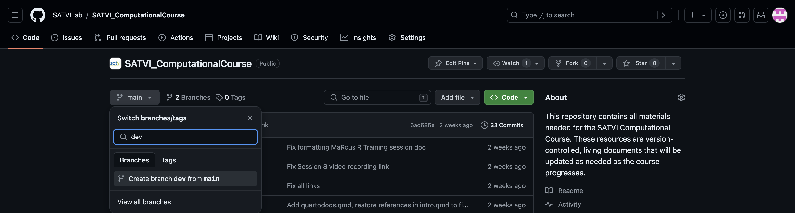
6. Clone your remote repo to your working directory.
- There are a number of ways to do this. To clone the repo from the command line, go to the online repo on GitHub, click "Code" and select your method. Copy the path and replace it into the line of code shown below in the Terminal: git clone https://github.com/SATVILab/SATVI_ComputationalCourse.git8.1.7 Create, branch, and push a repository from GitHub Desktop
1. Open GitHub Desktop and sign in.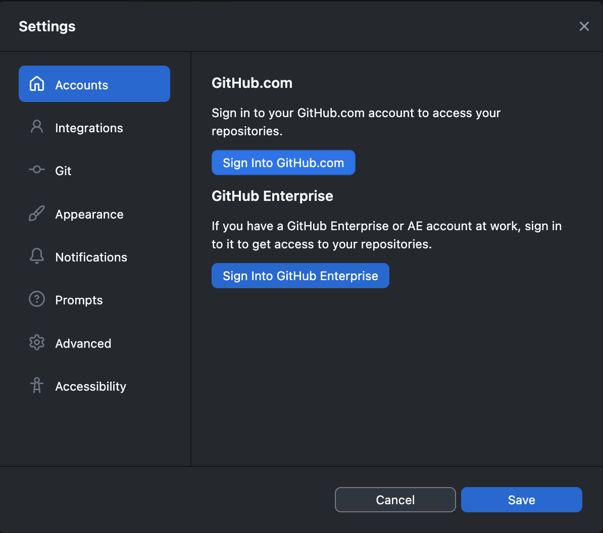
2. Add a repository. This repo can either be cloned from GitHub, created as a new repo, or added from an existing local repo. 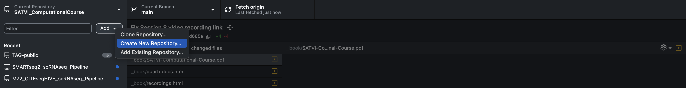
3. Branch the repo. 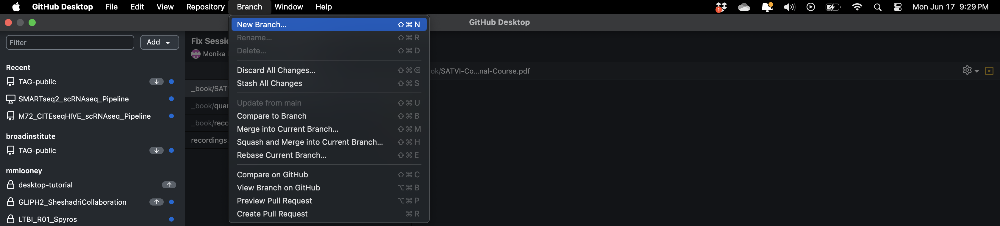
4. Push the repo to GitHub. 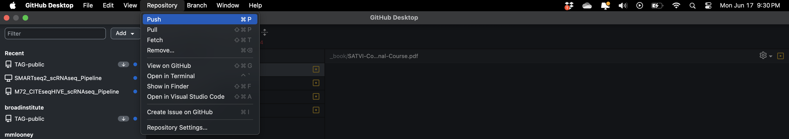
8.2 Cheatsheets
Here are two helpful git sheat sheets:
8.3 Homework
1. Read the blog post "What is GIT" from unstop2. Set up 2-Factor Authentication on your GitHub account. This will be required to access the SATVILab GitHub organization. Contact Miguel Rodo (rdxmig002@myuct.ac.za) to be added to the SATVILab organization. GitHub 2-Factor Authentication
3. Create a git repository from the Terminal and push to GitHub. This can be a test repo or, ideally, a repo that contains files related to your own project.
4. Download and install VS Code.
5. If it interests you, download and framework for git-aware terminal configuration, such as oh my zsh. Configure the settings to your liking.